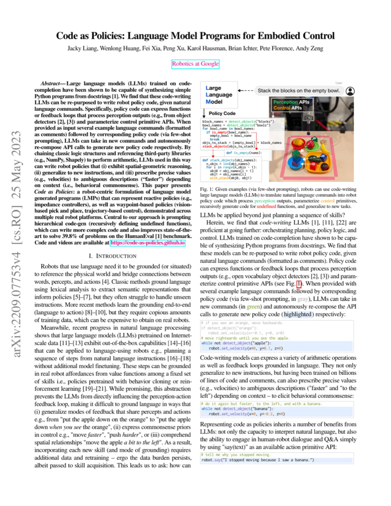
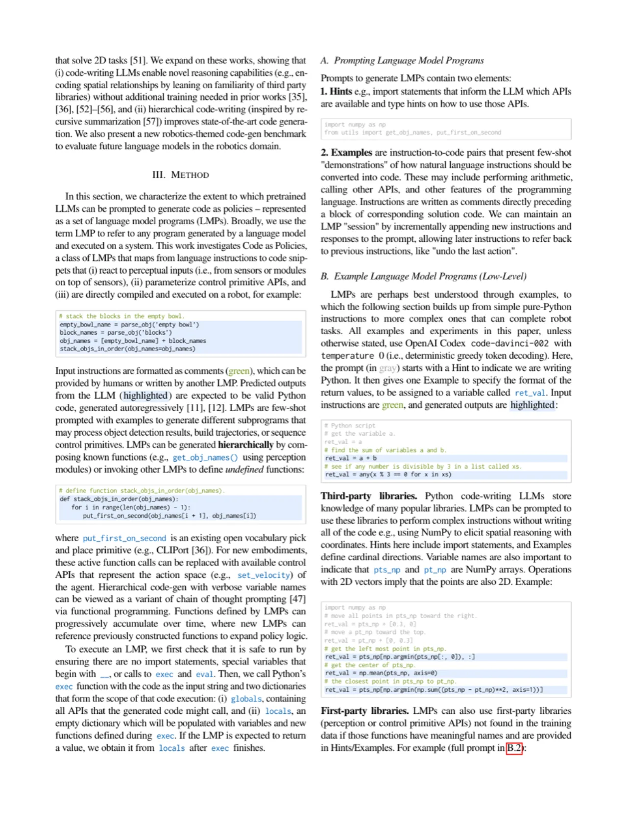
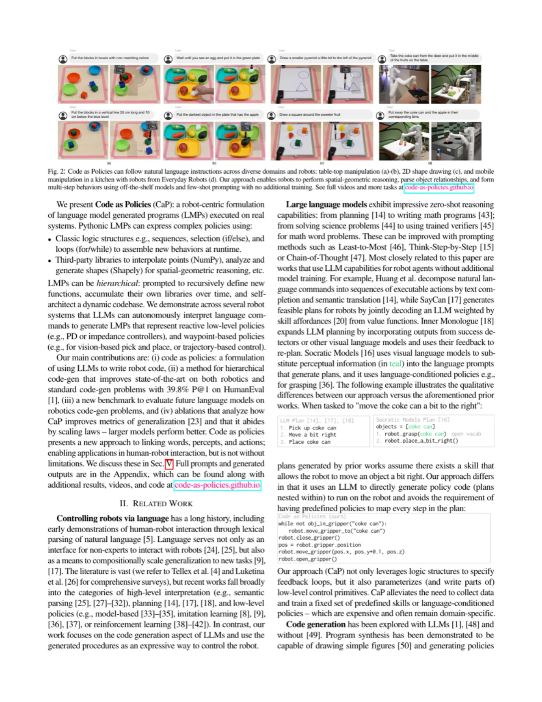
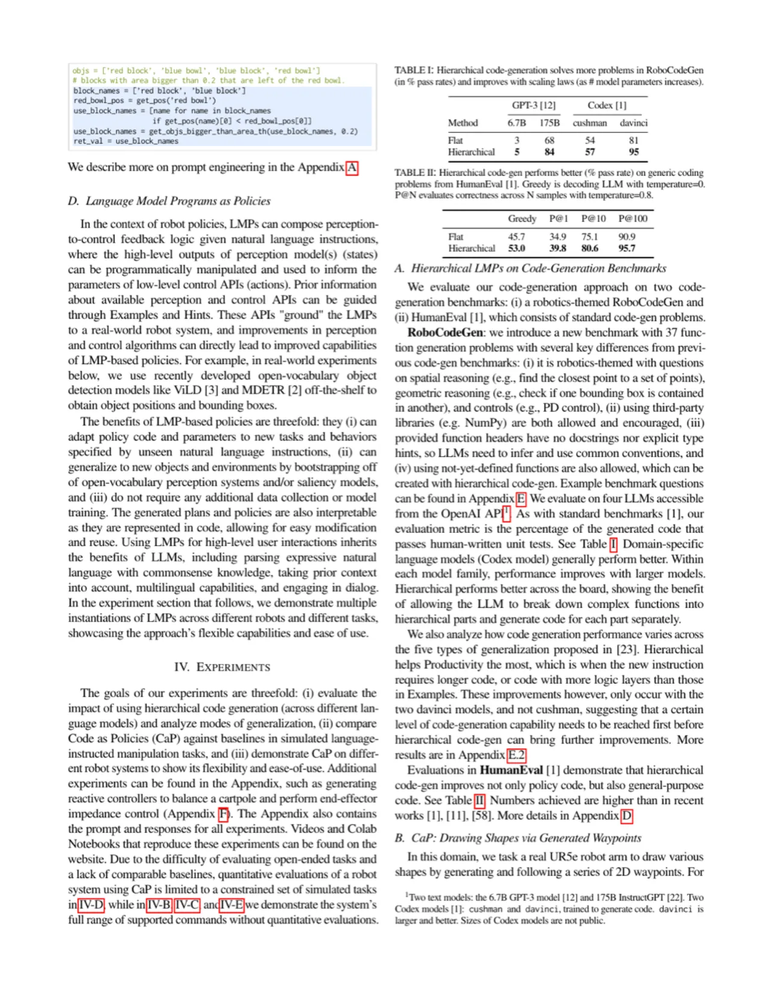

将在代码上训练的大语言模型（LLM）重新用于机器人控制：给定自然语言指令，通过少样本提示（few-shot prompting）让 LLM 自动组合 API 调用，生成可在真实机器人上执行的 Python 策略代码。无需额外训练，即可完成空间推理、泛化新指令、根据上下文精确赋值等复杂任务。
机器人需要理解自然语言指令并转化为具体行为。已有方法（如 SayCan、语义解析器）要么仅输出离散动作序列，要么需要大量标注数据训练，难以泛化到新指令。能否利用 LLM 直接生成结构化的机器人控制程序，从而利用代码的逻辑表达能力实现更强的空间推理与泛化？
"We find that language models trained on code-completion can be repurposed to write robot policy code, given natural language commands (formatted as comments) and few-shot examples of language instructions followed by corresponding code."

detect_objects）和控制 API（如 pick_place）来完成任务。代码包含逻辑结构（循环、条件判断）和第三方库调用（NumPy、Shapely），可表达复杂的空间推理。CaP 的核心洞察是：LLM 在代码补全任务上的训练赋予了它理解和生成 Python 程序的能力，而代码天然具备表达复杂逻辑的能力——这正是自然语言所缺失的。
Code as Policies（CaP）是一种以 LLM 为核心的机器人控制框架。在 Hints 中告知可用 API，在 Examples 中提供少量语言-代码对示范，然后让 LLM 为新的自然语言指令生成对应的策略代码，并直接在机器人上执行。

每个 LMP 是一段由 LLM 生成的 Python 函数。LMP 的输入提示格式如下：
# Place the first blue block to the left of the red block.
import numpy as np
target_pos = get_pos('red block')
place_pos = target_pos + np.array([-0.1, 0, 0])
put_first_on_second('blue block', place_pos)LMP 可以调用感知 API（如 detect_objects()、get_pos()）获取环境状态，调用控制 API（如 pick_place()、put_first_on_second()）执行动作。变量命名和代码结构遵循自然语言描述，使代码本身具有可读性。
当生成的代码引用了尚未定义的函数时，系统会递归地为该函数生成新的 LMP，直至所有函数均有实现。这一机制使 CaP 能处理更复杂的指令，同时保持每层提示的简洁性。
"LMPs can be hierarchically prompted: the prompt for a high-level function e.g.parse_obj... generates code that calls lower-level functions e.g.get_obj_bbox_area_xy, and automatically generates implementations of those lower-level functions."
层次化结构的优点：各层 LMP 专注于自身抽象层次，提示长度可控（在模型的 context window 内），同时组合产生高层行为能力。
CaP 允许代码导入并使用 NumPy（数值计算）、Shapely（几何计算）等标准 Python 库，从而无需专门训练即可完成精确的空间推理，例如"在四个对象的凸包内随机游走"等复杂几何任务。

作者在三个维度上评估 CaP：(i) 新提出的 RoboCodeGen benchmark（代码生成质量）；(ii) TabletopManipulation 仿真任务（与 CLIPort 等基线比较成功率）；(iii) 真实机器人上的定性演示。同时分析层次化 code-gen 对代码质量的提升效果。
作者提出 RoboCodeGen——一个包含 37 道机器人代码生成题目的评测集（对标 HumanEval 风格），涵盖 table-top manipulation 典型任务。指标为 pass@N（N 次采样中至少一次通过单元测试的比例）。

| 模型 | Code-gen 策略 | pass@6 | pass@11 |
|---|---|---|---|
| GPT-{112} | Flat | 84 | 90 |
| GPT-{112} | Hierarchical | 84 | 95 |
| Codex-{11} | Flat | 80 | 84 |
| Codex-{11} | Hierarchical | 84 | 87 |
Table I 节选（来自论文原文）：层次化代码生成在 pass@6 和 pass@11 指标上均优于或持平于 flat 策略，表明递归函数定义有效提升了代码质量。
| 方法 | Seen 属性 (%) | Unseen 属性 (%) | P@10 (%) |
|---|---|---|---|
| CLIPort [36] | 53.0 | N/A | N/A |
| VILD [1] | 0.00 | N/A | N/A |
| CaP (flat) | 53.0 | 39.3 | 90.9 |
| CaP (hierarchical) | 53.0 | 39.4 | 95 |
Table II 节选（来自论文原文）：CaP 在 Seen 属性上与 CLIPort 持平（53.0%），但 CLIPort 无法泛化到 Unseen 属性（需要重新训练），而 CaP 无需额外训练即可处理新属性（39.3%/39.4%）。
| Task Family | CLIPort [36] | P@10 | P@100 |
|---|---|---|---|
| Long-Horizon | 97.28 | 77.93 | N/A |
| Spatial-Geometric | 0.00 | N/A | 75.33 |
| Long-Horizon (UA) | 3.58 | N/A | N/A |
| Spatial-Geometric (UA) | 0.00 | N/A | 75.93 |
Table III 节选：CLIPort 在 Spatial-Geometric 任务上得 0 分（无法处理空间推理），而 CaP 通过 NumPy/Shapely 代码达到 75.33%（P@100）。Long-Horizon 任务上 CLIPort 领先（97.28% vs 77.93%），说明对于已见简单序列任务，专门训练的模型更有优势。
作者在 HumanEval benchmark 上分析了层次化代码生成的效果：将未定义函数递归分解后，pass@1 从基线提升至 39.8%，优于同规模的 flat 策略。这一结果直接支持了层次化 code-gen 的有效性假设。
"Hierarchical code generation, which incrementally generates new instructions and responses to the prompt, allows later instructions to refer back to previous instructions, like 'undo the last action'."
CaP 的上限受制于所提供的感知与控制 API 质量。论文指出："the scope of actions a robot can perform is bounded by its available APIs and skills." 如果底层检测器无法识别某类物体，或控制 API 不支持某种操作，CaP 无法弥补这一差距。
"This work focuses on the language-to-policy interface and does not directly address the challenges of perception and motion planning." CaP 假设可靠的感知 API（如 open-vocabulary 目标检测 VILD [1]）和低层控制器已就绪，而这些本身就是活跃的研究领域。
论文在 Discussion 中指出，当指令的复杂度远超 Examples 中的示例时（例如需要构建完整的 3D 场景），CaP 难以生成正确代码。"it would be difficult for LMPs to 'build a house with the blocks,' since there are no Examples on building complex 3D structures."
生成的代码在执行前无安全验证机制——若 LLM 生成了错误的 API 调用序列或数值（如超出机器人工作空间的位置），只有在执行时才能发现错误。这对真实机器人部署是一个安全隐患。
论文实验主要使用 GPT-3 Codex（当时为 OpenAI API 付费服务），每次指令执行都需要调用大型模型进行 code-gen。在时延和成本上对实时机器人控制存在挑战，尤其是层次化递归生成时需要多次 API 调用。